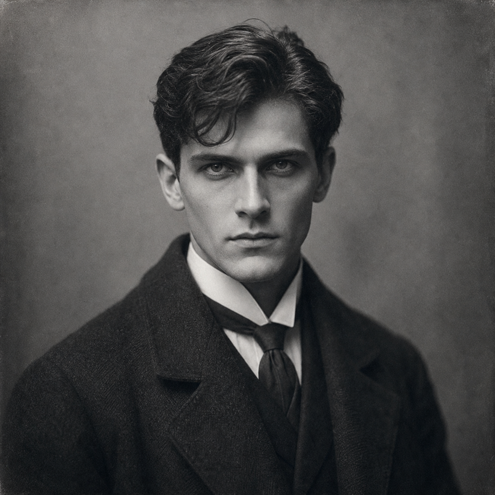

Chaney Markov
Superhuman martial artist and human wall who carries impossible physical gifts under a discipline that keeps them from ruling him.
21 / 17
15
13
17 / 21
7
7.00

Powers
- Superhuman strength and toughness: Chaney's core gift is physical - ST and HT that exceed any normal human explanation, DR 10 against everything, and the endurance to absorb punishment that would drop an ordinary man.
- Trained By A Master / cinematic Jujutsu: his martial training is as extraordinary as his body. Pressure Points-18, Power Blow-14, and Pressure Secrets-13 make him lethal through technique, not just brute force.
- Note: the Dwarfism disadvantage is used here to cap his height at 6'4" rather than the 6'6"+ his raw ST would produce - a mechanical reflection of a frame that was shaped, not merely grown.
FRH Package
- Patron (Followers of the Right Hand) (15 or less) [60]: Equipment: Standard, +5; Special Qualities (Access to Magic in Non-magical World): Very Unusual, +10; Secret: -5; Subtraction (Minimal Intervention): -5.
- Duty (15 or less) [-25]: Involuntary: -5; Subtraction (Extremely Hazardous): -5.
- Enemy (Unknown Enemies of FRH) [-60]: Unknown: -5; Subtraction (Access to Magic in Non-magical World): -15.
Required Secret Power
Superhuman ST 21/17 and HT 17/21. The raw numbers exceed any normal human range and cannot be explained without disclosing the hidden lane.
DR 10 (Everything) [30]. Damage resistance at this level is definitively superhuman and contributes directly to the secret.
Trained By A Master [40] with cinematic Jujutsu (Power Blow, Pressure Points, Pressure Secrets): the martial overlay that channels the physical gifts into precise technique.
Secret (super strength and DR) [-20]: the physical gifts are concealed and would be dangerous if publicly understood.
Required Secret Society
Servants of Light. The hidden martial order that recognized Chaney's gifts and trained him. Their teaching is the discipline that keeps his body from becoming a liability rather than an asset.
Secret (Member of Servants of Light) [-5]. The order's existence and Chaney's membership are both concealed.
FRH does not count toward this requirement. The Servants of Light are Chaney's non-FRH hidden-order lane.
How Chaney Uses His Powers
- He is the party's physical guarantor - the man who can take the hit, make the forced entry, and hold the defended ground while subtler investigators work.
- Pressure Points and Pressure Secrets let him neutralize or incapacitate threats without spectacle. He does not need to kill to stop something.
- He is strongest in cases where the danger is immediate, physical, defended, and close. He does not need distance, preparation, or elaborate framing to be effective.
- His visible competence can mislead a party into assuming the hardest problems are the physical kind. FRH is rarely that kind - which makes Chaney's role partly about demonstrating what force actually covers and what it does not.
Advantages
DR 10 (Everything) [30]; Lang: English (Native) [0]; Lang: Japanese (Accented/Native) [5]; Patron (Followers of the Right Hand) (15 or less) [60]; Trained By A Master [40].
Disadvantages
Dwarfism [-15] (Keeps height at 6'4" instead of the 6'6"+ from ST); Duty (15 or less) [-25]; Enemy (Unknown Enemies of FRH) [-60]; Secret (super strength and DR) [-20]; Secret (Member of Servants of Light) [-5].
Quirks
Chess player; Doesn't drink alcohol; Lucky number: 3; Always wears "lucky" jacket; Hates broccoli.
Investigative Role
- Physical protector and entry specialist
- Close-quarters threat resolver
- Human wall for weaker investigators
- Embodied demonstration of FRH's hidden-power architecture
Why He Works
Chaney proves that a physical powerhouse built on hidden superhuman gifts can be morally interesting without being narratively complicated. His simplicity is the point: discipline over power, protection over spectacle, decency over drama.
Skills
Arm Lock (Judo)-17 [1]; Back Kick (2d+3)-14 [2]; Binding-17 [1]; Boxing-0 [0]; Brawling-15 [1]; Disarming (Brawling)-17 [2]; Guns/TL6 (Pistol)-16 [1/2]; Guns/TL6 (Rifle)-16 [1/2]; Guns/TL6 (Shotgun)-16 [1/2]; Judo-16 [8]; Karate-16 [8]; Karate Art-14 [1]; Power Blow-14 [6]; Pressure Points-18 [14]; Pressure Secrets-13 [8]; Roll with Blow-10 [1]; Savoir-Faire (Dojo)-13 [1]; Spin Kick (2d+3)-15 [2]; Stealth-13 [1/2]; Streetwise-13 [2].
Character Overview
Chaney Markov was born with a body that made ordinary explanations difficult. Strength, toughness, and recovery came too easily, and even before he understood what was strange about him, other people did. Instead of spending his life pretending he was normal, Chaney went looking for someone who could tell him what he was and what to do with it. That search led him to the Servants of Light, a secretive martial order that recognized both his gifts and the danger they posed. They trained him hard, taught him discipline, and made it very clear that their teachings were not to be discussed lightly. What they gave him was not just technique. It was a way to live inside an impossible body without becoming ruled by it.
That training made Chaney dangerous, but it also made him simple in the best sense of the word. He is direct where other FRH characters are tangled. He believes in stepping in, taking the hit, breaking the line, protecting the fragile person, and ending the immediate threat before it gets uglier. He travels the country trying to help people because helping is the cleanest use he knows for what he has been made into. He is not a salon operator, not a mystic lecturer, and not a subtle social manipulator. He is the man you want when the danger is human, physical, defended, and close at hand.
What makes Chaney interesting is that his visible competence can make a group feel safer than it really is. He is so physically capable that people can start to assume the worst problems are the kind that can be punched, thrown, or endured. FRH is rarely that kind. Chaney's role is to carry human threat truth: the immediate embodied danger, the hard entry, the protection of weaker investigators, the defended ground that must be crossed by someone willing to cross it first. He is plainspoken, disciplined, and more decent than complicated, but the secret behind his strength and the secret behind his training order mean that even his simplest acts of protection are never entirely free.